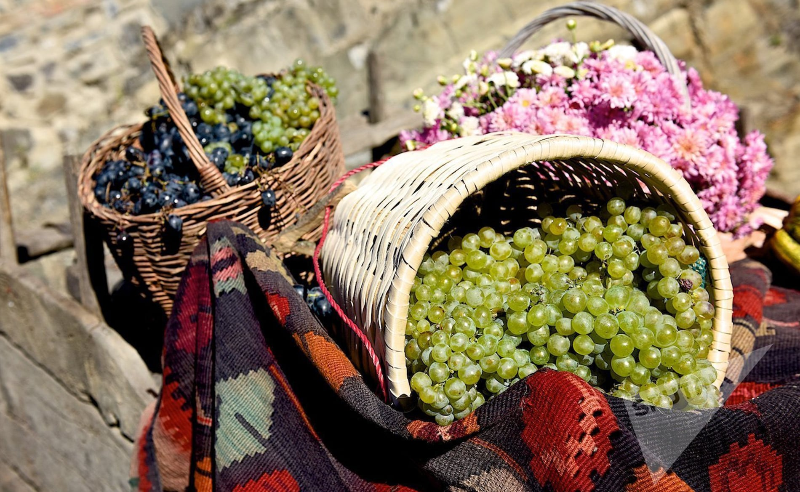
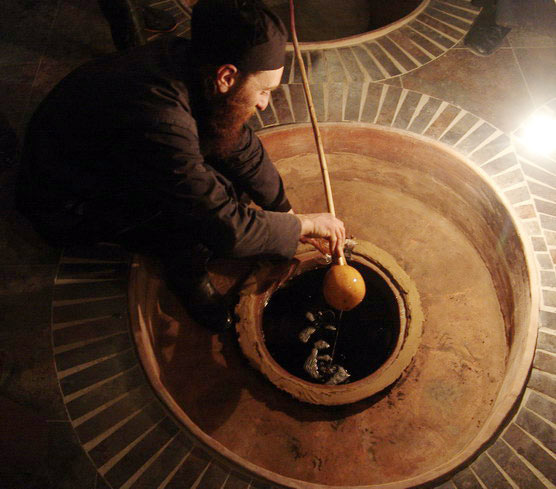
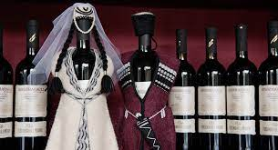
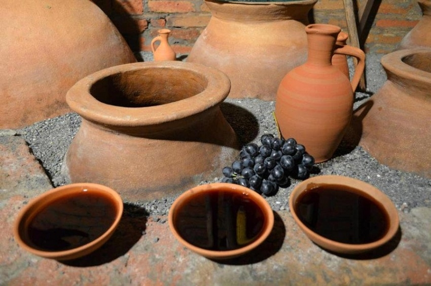

- 
-

- 
- 
- 
Georgia is generally considered the ‘cradle of wine’, as archaeologists have traced the world’s first known wine creation back to the people of the South Caucasus in 6,000BC. These early Georgians discovered grape juice could be turned into wine by burying it underground for the winter. Some of the qvevris they were buried in could remain underground for up to 50 years.
Wine continued to be important to the Georgians, who incorporated it into art and sculpture, with grape designs and evidence of wine-drinking paraphernalia found at ruins and burial sites.
Here are some of interesting facts about Georgian wine:
And here are some of the most famous wine species: